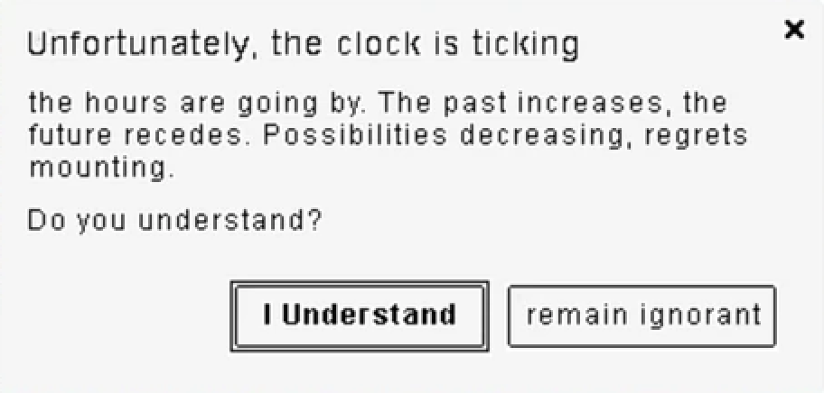

I always wear a watch
February 7, 2026
To me, there is something magical about watches. To paraphrase someone, a watch can be a tool, a piece of jewelry, a work of art, a lesson in history, a feat of engineering, or an heirloom that carries a lifetime of joy, scars and stories from the person who wore it. Few other man-made objects pack so much beauty and history into so little space. The ticking of the movement and the sweep of the hands constantly remind me of our limited time on Earth. It’s a subtle reminder to pause and appreciate every second that I have.
It also represents the good about humanity. All the collaboration and ingenuity of people are evident in the design. We took a bunch of raw materials and engineered a device that not only tells the time of day, date, and day of week, but whose modern "smart" iterations do so much more.
Being able to tell the time is vital to my sense of existence and productivity. Because of this, a watch is a permanent fixture on my wrist. I use my Apple Watch as a high-precision tool, and my traditional watches for those moments where I fully want to stay away from technology. However, in an age of constant digital noise, I’ve had to be intentional about what a (smart) watch does for me. After all, it is not that we have a short time to live, but that we waste a lot of it.
The modern tool watch: Apple Watch
Most days, you will find me wearing an Apple Watch. I truly believe Apple should be proud of what they have engineered here; it is, in my view, the best modern "tool watch" ever created. But to make it work for me, I’ve had to "dumb it down."
The internet can be a matrix. If you don't bend it to your will, it will pull you in for hours. My idea is simple: the phone is a portal to distractions. To stay focused, I’ve stripped the Apple Watch of a lot of distractions and I try to use it purposefully. It is a tool watch after all. There are no pings from messaging apps. If someone needs me urgently, they will call; otherwise, the message can wait until I am intentionally using my phone. And the best thing about calls? I can answer them on my Apple Watch.
This allows me to use the Apple Watch as a high-precision instrument for my own life, focus and productivity, rather than it being a portal for distractions. When my watch does tap my wrist, it’s for an actionable, purposeful reason. I use it for:
- Intentional productivity and Siri: For a lot of my work, I use pomodoro timers, and I try to timebox my tasks. I also regularly use Siri to set reminders without ever touching a screen. Also, it's great to set a timer via Siri when cooking, when your hands are all greasy and messy. Just being able to raise the watch and say "set a 10-minute timer" or "add tea to my shopping list" is great.
- Health: Tracking my medications (reminder about all the multivitamins and supplements I take in the morning and evening), and checking my sleep quality.
- Finance: Notifications about price movements of securities of interest to me.
- Fitness: As someone who does 3–7 workouts a week, from morning gym sessions to afternoon runs, the tracking is indispensable. Even when my resting heart rate dips into the 40s during peak season, the watch is there to monitor the data. I can also review my workouts and see what went well and what didn't, and where to improve.
Refined engineering and utility
The build quality is exceptional. After years of daily use, the silicone bracelet remains like new, and the screen shows only the faintest marks of a life well-lived. I especially appreciate the thoughtful touches, like the scroll-wheel brightness control that lets me check the time in the middle of the night without being blinded by a glare. It is a masterclass in functional design.
Even the morning ritual is better: the alarm vibrating on my arm and waking me up instead of an annoying and loud alarm clock on a phone is absolutely great.
My battery workflow is simple: I charge it in the morning while getting ready before the gym or work, and always when showering. As I shower once or twice every single day, the watch always has enough battery. Besides that, it's a rather small battery, so even if low on it, it's charged rather quickly.
Let's also not forget about other features that saved the lives of so many people, and which I hopefully will never need - fall detection and crash detection, which automatically reach emergency services and share your location, while also notifying your emergency contacts.
Overall, this watch has made so many incremental improvements to my life. It’s a tool that serves me, rather than a leash that pulls me.
The balance with classic watches
Despite my reliance on the Apple Watch, my love for traditional horology remains. There are moments, such as weekends, formal events, and regular days when I'm tired of all the technology, where I set the tech aside and reach for my Seiko automatic, or one of my Casio quartz watches.
In those moments, the "smart" features are gone. There are no timers, no fitness tracking, and even useful notifications are gone. There is just the mechanical heartbeat of the Seiko or the simple reliability of the Casio. These watches offer a different kind of utility: the ability to fully disconnect and appreciate the time as it passes, rather than just managing it.
It is truly amazing when we consider the engineering involved. A mechanical movement is a masterclass of precision - a tiny mechanism of springs, gears, and levers all working in perfect unison to track the time, powered by nothing more than the movement of your wrist. On the other hand, there is the quiet genius of the quartz watch. It is a marvel of science that we discovered how to pass a small electric charge through a tiny sliver of quartz crystal, causing it to vibrate at a precise frequency to keep time better than almost any mechanical clock ever could.
Both automatic and quartz watches are a more romantic connection to time. One that doesn't ask anything of me and doesn't remind me of my "to-do" list. It simply exists, ticking away with mechanisms that connect me to centuries of watchmaking history.
Between the high-tech utility of the Apple Watch or classic Japanese movements, I’m finding a way to manage my time, and more importantly, to enjoy it. It’s how I stay grounded in the present.
